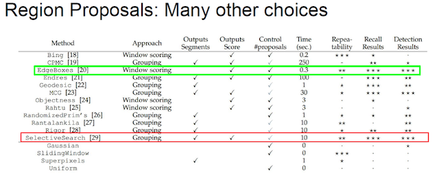

5.2 R-CNN
学习目标
- 目标
- 了解Overfeat模型的移动窗口方法
- 说明R-CNN的完整结构过程
- 了解选择性搜索
- 知道NMS的过程以及作用
- 了解候选区域修正过程
- 说明R-CNN的训练过程
- 说明R-CNN的缺点
- 应用
- 无
对于一张图片当中多个目标，多个类别的时候。前面的输出结果是不定的，有可能是以下有四个类别输出这种情况。或者N个结果，这样的话，网络模型输出结构不定


所以需要一些他的方法解决目标检测（多个目标）的问题，试图将一个检测问题简化成分类问题
5.2.1 目标检测-Overfeat模型
5.2.1.1 滑动窗口
- 目标检测的暴力方法是从左到右、从上到下滑动窗口，利用分类识别目标。
- 为了在不同观察距离处检测不同的目标类型，我们使用不同大小和宽高比的窗口。如下图所示：

注：这样就变成每张子图片输出类别以及位置，变成分类问题。
但是滑动窗口需要初始设定一个固定大小的窗口，这就遇到了一个问题，有些物体适应的框不一样
- 所以需要提前设定K个窗口，每个窗口滑动提取M个，总共K x M 个图片，通常会直接将图像变形转换成固定大小的图像，变形图像块被输入 CNN 分类器中，提取特征后，我们使用一些分类器识别类别和该边界框的另一个线性回归器。

5.2.1.2 Overfeat模型总结
这种方法类似一种暴力穷举的方式，会消耗大量的计算力量，并且由于窗口大小问题可能会造成效果不准确
。但是提供了一种解决目标检测问题的思路
5.2.2 目标检测-R-CNN模型
在CVPR 2014年中Ross Girshick提出R-CNN。论文名称：用于精确的对象检测和语义分割的丰富功能层次结构（Rich feature hierarchies for accurate object detection and semantic segmentation）
5.2.2.1 论文背景
各种视觉识别任务的过去的十年取得了很大的进步，这取决于SIFT和HOG的使用。但是如果我们观察典型的视觉识别任务的性能，如PASCAL VOC对象检测3，会发现2010-2012年进展缓慢，仅通过组合不同模型和使用已有方法的变体来获得很小的改进。
在典型的PASCAL VOC数据集上测量的对象检测性能在过去几年中已经稳定下来。最好的方法是复杂的系统，通常将多个低级图像特征与高级语境相结合。R-CNN与OverFeat进行比较，OverFeat是最近提出的基于类似CNN架构的滑动窗口检测器。我们发现R-CNN在20类的ILSVRC2013检测数据集上大幅超越OverFeat。
- 效果：相对于2012年VOC的先前最佳结果，平均精度（mAP）提高了30％以上，达到53.3％的mAP，在200类的ILSVRC2013检测数据集上，R-CNN的mAP为31.4％，超过OverFeat的24.3％很多
- 方法：
- 1、可以将大容量卷积神经网络（CNN）应用于自下而上的区域提案，以便定位和分割对象
- 2、当标记的训练数据稀缺时，对辅助任务进行训练，然后进行域特定的微调，可以显着提升性能
- 注：将区域提案与CNN相结合，所以我们称之为我们的方法R-CNN：具有CNN特征的区域
5.2.2.1 完整R-CNN结构
不使用暴力方法，而是用候选区域方法（region proposal method）,创建目标检测的区域改变了图像领域实现物体检测的模型思路，R-CNN是以深度神经网络为基础的物体检测的模型 ，R-CNN在当时以优异的性能令世人瞩目，以R-CNN为基点，后续的SPPNet、Fast R-CNN、Faster R-CNN模型都是照着这个物体检测思路。如下图过程为：输入一张图像，提取约2000个自下而上区域提案，使用大卷积神经网络（CNN）计算每个提案的特征，然后使用类别特定的线性SVM。

- 步骤（论文中以AlexNet网络为基准）
- 1.候选区域：使用选择性搜索选择2000个候选区域
- 2.将候选区域调整为适应AlexNet网络的输入图像的大小227×227，通过CNN对候选区域提取特征向量，2000个建议框的CNN特征组合成网络AlexNet最终输出：2000×4096维矩阵
- 3.将2000×4096维特征经过SVM分类器(假设20种分类，SVM是二分类器，则有20个SVM)，获得2000×20种类别矩阵（图像的所有点积运算都被整合为单个矩阵与矩阵的相乘。特征矩阵通常为2000×4096，SVM权重矩阵为4096×N，其中N为类别数）
- 测试：
- 分别对2000×20维矩阵中进行非极大值抑制（NMS:non-maximum suppression）剔除重叠建议框，得到与目标物体最高的一些建议框
- 修正bbox，对bbox做回归微调
5.2.2.2 候选区域（Region of Interest）得出（了解）

选择性搜索（SelectiveSearch，SS）中，selective search方法是一个语义分割的方法，它通过在像素级的标注，把颜色、边界、纹理等信息作为合并条件，多尺度的综合采样方法，划分出一系列的区域，这些区域要远远少于传统的滑动窗口的穷举法产生的候选区域。

SelectiveSearch在一张图片上提取出来约2000个侯选区域，需要注意的是这些候选区域的长宽不固定。 而使用CNN提取候选区域的特征向量，需要接受固定长度的输入，所以需要对候选区域做一些尺寸上的修改。
5.2.2.3 CNN特征提取
通过训练好的Alex-Net，先将每个region固定到227*227的尺寸，然后对于每个region都提取一个4096维的特征。在侯选区域的基础上提取出更高级、更抽象的特征，这些高级特征是作为下一步的分类器、回归的输入数据。

提取的这些特征将会保存在磁盘当中（这些提取的特征才是真正的要训练的数据）
注：为什么CNNs需要一个固定的输入尺寸呢？CNN主要由两部分组成，卷积部分和其后的全连接部分。卷积部分通过滑窗进行计算，并输出代表激活的空间排布的特征图（feature map）。事实上，卷积并不需要固定的图像尺寸，可以产生任意尺寸的特征图。而另一方面，根据定义，全连接层则需要固定的尺寸输入。因此固定尺寸的问题来源于全连接层，也是网络的最后阶段。含有全连接层的网络输入数据的大小应该是固定的，这是因为全连接层和前面一层的连接的参数数量需要事先确定，不像卷积核的参数个数就是卷积核大小，前层的图像大小不管怎么变化，卷积核的参数数量也不会改变，但全连接的参数是随前层大小的变化而变的，如果输入图片大小不一样，那么全连接层之前的feature map也不一样，那全连接层的参数数量就不能确定， 所以必须实现固定输入图像的大小。
5.2.3 模型训练
5.2.3.1 CNN训练训练
首先拿到Alex-Net在imagenet上训练的CNN作为pre-train，然后将该网络的最后一个fc层的1000改为（论文测试的数据集是20类object+background）N+1（N为类别的数目，1是加一个背景）来fine-tuning用于提取特征的CNN。
- 论文中：将候选区域与人工标注的真实检测框大于0.5的IOU作为正样本，小于0.5的作为负样本，以0.001（初始学习率的1/10）的学习率开始SGD，对于每个batch-size = 128，32个为正样本，96个位负样本，以构建大小为128的小批量。
- 采用正样本较少是因为它们与背景相比非常少见
5.2.3.2 分类器SVM训练
- 目的：训练N（N为类别数）个svm分类器，分别对每一类做一个二分类，
- 1、一张图片的2000个侯选区域，那么提取出来的就是2000 x 4096这样的特征向量（R-CNN当中默认CNN层输出4096特征向量）。
- 2、R-CNN选用SVM进行二分类。假设检测20个类别，那么会提供20个不同类别的SVM分类器，每个分类器都会对2000个候选区域的特征向量分别判断一次，这样得出[2000, 20]的得分矩阵，如下图所示

分类训练正负样本：
- 进行正负样本的区分，IoU的值进行比较，但是这个值大小会影响最终的效果。在这里，作者是将大于0.5的IoU作为正样本，小于0.3的IoU作为负样本，至于为什么这里不是0.5，当设置为0.5的时候，mAP下降5%，设置为0的时候下降4%，最后取中间0.3。
- 为什么这样么选择IoU负样本小于0.3的: 因为softmax的负样本（也可以理解为背景样本）是随机选择的即在整个网络中是共享的，而svm的负样本是相互独立的，每个类别都分别有自己的负样本，svm的负样本更加的“hard”，所以svm的分类的准确率更高。
每个SVM分类器做的事情
- 判断2000个候选区域是某类别，还是背景
5.2.3.3 Boundingbox Regression
那么通过非最大一直筛选出来的候选框不一定就非常准确怎么办？R-CNN提供了这样的方法，建立一个bbox regressor
- 来源于受到DPM中使用的边框回归训练启发，训练一个线性回归模型在给定一个selective search region proposal的特征时去预测一个新的检测窗口。修复了大量的定位错误的检测情况，提升了3-4个百分点。
这一部分，通过训练一个回归器来对region的范围进行一个调整，毕竟region最开始只是用selective search的方法粗略得到的，通过调整之后得到更精确的位置。修正候选区域过程如下：
- 回归用于修正筛选后的候选区域，使之回归于ground-truth，默认认为这两个框之间是线性关系，因为在最后筛选出来的候选区域和ground-truth很接近了
修正过程（线性回归）

- 给定：anchor
和
- 寻找一种变换F，使得：
，其中

5.2.3.4 正负样本分配问题？
第一个是：为什么在微调CNN和训练目标检测SVM时定义的正负样本不同？
首先简要回顾下正负样本的定义，对于微调，我们将每个目标提案映射到它具有最大IoU重叠（如果有的话）的检测框真值上，
如果其IoU至少为0.5，并将其标记为对应类别的正样本。剩下的提案都标记为“背景”（即所有类的负样本）。
对于训练SVM，相比之下，我们只采用检测框真值作为各自类别的正样本。与某一类别所有的正样本的IoU都小于0.3的目标提案将被标记为该类别的负样本。其它（IoU超过0.3，但不是检测框真值）的提案被忽略。
1、结果上不好：顺序上，我们开始通过由ImageNet预先训练的CNN计算出的特征训练SVM，因此微调在这个时间点不是一个需要考虑因素。论文中实验开始使用微调时，如果使用与SVM训练的正负样本的定义相同的定义。会发现结果比使用当前定义的正负样本获得的结果差得多。
5.2.4 测试过程
首先咋两个数据集的测试结果如下：
1、PASCAL VOC2010-12上的结果

2、ILSVRC13上的结果

5.2.4.1 非最大抑制（NMS）
目的
- 筛选候选区域，目标删除那些冗余的候选框
输入：
- 通过N个SVM来判断每一个RP属于各个类的scores。其中，SVM的权重矩阵大小为4096 xN，最后得到2000 x N的一个分数矩阵。找到每个bbox对应的类别。
迭代过程:
- 对于某个类别中Bounding Box的位置以及置信度集合列表B，选择具有最大score的检测框M,将其从B集合中移除并加入到最终的模型输出检测结果G中。然后将B中剩余检测框中与M的IoU大于阈值threshold的框从B中移除。然后重复上述过程,直到B为空。
- 两个集合：B集合（模型最开的bbox结果）和G集合（输出检测结果）
- 对于某个类别中Bounding Box的位置以及置信度集合列表B，选择具有最大score的检测框M,将其从B集合中移除并加入到最终的模型输出检测结果G中。然后将B中剩余检测框中与M的IoU大于阈值threshold的框从B中移除。然后重复上述过程,直到B为空。
假设现在滑动窗口有：A、B、C、D、E 5个候选框都是预测车类别分数最高，接下来最计算：
- 第一轮：因为B是得分最高的，与B的IoU＞0.5删除。A，CDE中现在与B计算IoU，DE结果＞0.5，剔除DE，B作为一个预测结果，有个检测框留下B，放入集合
- 第二轮：A的得分最高，与A计算IoU，C的结果＞0.5，剔除C，A作为一个结果
最终结果为在这个5个中检测出了两个目标为A和B
注：SS算法得到的物体位置已经固定了，但是我们筛选出的位置不一定真的就特别准确，需要对A和B进行最后的修正
实现代码解析
import numpy as np
def nms(dets, thresh):
# dets: 检测的 boxes 及对应的 scores
# thresh: 设定的阈值
# boxes 位置
x1 = dets[:, 0]
y1 = dets[:, 1]
x2 = dets[:, 2]
y2 = dets[:, 3]
# boxes scores
scores = dets[:, 4]
areas = (x2 - x1) * (y2 - y1) # 各 box 的面积
order = scores.argsort()[::-1] # boxes 的按照 score 排序
keep = [] # 记录保留下的 boxes
while order.size > 0:
i = order[0] # score 最大的 box 对应的 index
keep.append(i) # 将本轮 score 最大的 box 的 index 保留
# 计算剩余 boxes 与当前 box 的重叠程度 IoU
xx1 = np.maximum(x1[i], x1[order[1:]])
yy1 = np.maximum(y1[i], y1[order[1:]])
xx2 = np.minimum(x2[i], x2[order[1:]])
yy2 = np.minimum(y2[i], y2[order[1:]])
w = np.maximum(0.0, xx2 - xx1) # IoU
h = np.maximum(0.0, yy2 - yy1)
inter = w * h
ovr = inter / (areas[i] + areas[order[1:]] - inter)
# 保留 IoU 小于设定阈值的 boxes
inds = np.where(ovr <= thresh)[0]
order = order[inds + 1]
return keep
5.2.5 检测的评价指标
5.2.5.1 IoU交并比
- 目的：主要用于在CNN和SVM训练的时候计算正负样本使用，以及测试阶段的NMS使用
| 任务 | description | 输入 | 输出 | 评价标准 |
|---|---|---|---|---|
| Detection and Localization (检测和定位) | 在输入图片中找出存在的物体类别和位置(可能存在多种物体) | 图片(image ) | 类别标签(categories)和 位置(bbox(x,y,w,h)) | IoU (Intersection over Union) |
- IoU（交并比）
- 两个区域的重叠程度overlap：侯选区域和标定区域的IoU值
- 通常Correct: 类别正确 且 IoU > 0.5
1、IOU 实现（重点）
def union(au, bu, area_intersection):
"""
计算并集
:param au:
:param bu:
:param area_intersection:
:return:
"""
# 计算a的面积
area_a = (au[2] - au[0]) * (au[3] - au[1])
# 计算b的面积
area_b = (bu[2] - bu[0]) * (bu[3] - bu[1])
# a和b的面积-交集面积=总共面积
area_union = area_a + area_b - area_intersection
return area_union
def intersection(ai, bi):
"""
计算交集
:param ai:a框坐标
:param bi:b框坐标
:return:
"""
# 1、取出交集的左上角点
x = max(ai[0], bi[0])
y = max(ai[1], bi[1])
# 2、取出交集的右下角点，并减去左上角点值，计算出交集长宽
w = min(ai[2], bi[2]) - x
h = min(ai[3], bi[3]) - y
# 3、如果一个为0，返回交集面积为0
if w < 0 or h < 0:
return 0
return w*h
def iou(a, b):
"""
计算交并比
:param a: a框坐标
:param b: b框坐标
:return:
"""
# 1、如果a,b 传入有问题
if a[0] >= a[2] or a[1] >= a[3] or b[0] >= b[2] or b[1] >= b[3]:
return 0.0
# 2、计算IOU
# 交集区域
area_i = intersection(a, b)
# 并集区域
area_u = union(a, b, area_i)
return float(area_i) / float(area_u + 1e-6) # 防止分母为0，加一个稳定系数
做测试：
if __name__ == '__main__':
# 假设一个图片10 x 10的大小，左上角(0, 0) 右下角(10, 10)
# A框：(1, 1, 5, 5)，B框：(3, 3, 6, 6)
a = (1, 1, 5, 5)
b = (3, 3, 6, 6)
print("交并比为：%f" % iou(a, b))
输出结果：
交并比为：0.190476
5.2.5.2 平均精确率（mean average precision）mAP
目标检测问题中的每个图片都可能包含一些不同类别的物体。如前所述，需要评估模型的物体分类和定位性能。因此，用于图像分类问题的标准指标accuracy不能直接应用于此。
- 首先回顾精确率与召回率
- 精度precision的计算是用 检测正确的数据个数/总的检测个数
- 召回率recall的计算是用 检测正确的数据个数/所有正数据个数。

- mAP：
- 定义：多个分类任务的AP的平均值
- mAP = 所有类别的AP之和 / 类别的总个数
- 注:在机器学习中的PR曲线，而AP（average precision）就是这个曲线下的面积(ROC与AUC)
- 注意事项：测试的时候计算mAp的话, 是用非极大抑制之后得到的结果来计算
- 定义：多个分类任务的AP的平均值
1、前提条件，测试数据中会有很多图片进行测试
给定ground truth label (GT)，每一个GT包含(imageID, bbox, category)，分别为所属图片ID、矩形框位置、所属类别。
prediction，每一个prediction包含(imageID, bbox, category, score)，相比GT多了score属性，即每个prediction的confidence
- IOU threshold
2、计算每个类别的AP（计算流程）
（1）分配GT
- 相同imageID下，相同category下，对prediction分配GT
- 1、score大的predication优先分配GT
- 2、与GT的overlap小于IOU threshold的prediction不分配GT
- 3、与多个GT的overlap大于IOU threshold的prediction，分配IOU最大的GT
- 4、每个GT最多只分配给一个prediction
- 注：COCO数据集或有AP-50，AP-75说法，就是threshold=0.5和threshold=0.75的判断标准不一样
（2）计算每个类别的AP
- 相同category下，确定该类别下所有的预测属于（TP、TN、FN）哪个（指定一个score threshold）
- TP、FP、TN确定阶段：
- 1、对于某一score threshold，有分配GT的并且score大于score threshold的prediction为TP
- 2、无分配且score大于score threshold的prediction为FP
- 3、其余的GT为FN
- 计算AP
- precision=TP/(TP+FP)
- recall=TP/(TP+FN)
- score threshold选取[0,1]之间的11个不同的值[0, 0.1, ..., 0.9, 1.0]，得到PR-curve
- 对PR-curve积分求面积得到AP
- TP、FP、TN确定阶段：
- （3）不同category重复上述流程，对AP求平均得到mAP（COCO会对不同IOU threshold，重复上述流程，对mAP求平均）
5.2.5 论文R-CNN总结
5.2.5.1 特征提取对比
微调不同层的效果： 分别是pool5，fc6和fc7经过finetuning之后的结果，由上图可以看出，pool5经过finetuning之后，mAP的提高不大，所以可以说明卷积层提取出来的特征是更具有泛化性的，而fc7经过finetuning之后的提升最大，说明finetuning主要作用于全连接层。
与近期特征学习方法的比较
- 所有R-CNN变体的都优于三个DPM基线（第8-10行），包括使用特征学习的两个。与仅使用HOG特征的最新版本的DPM相比，我们的mAP提高了20个百分点以上：54.2％对比33.7％，相对改进61％。HOG和草图表征的组合与单独的HOG相比mAP提高2.5个点，而HSC在HOG上mAP提高了4个点（使用内部私有的DPM基线进行比较，两者都使用非公开实现的DPM，低于开源版本20）。这些方法的mAP分别达到29.1％和34.3％。

5.2.5.2 网络架构
论文中大部分结果所采用的架构都来自于Krizhevsky et al. (AlexNet)，架构的选择对于R-CNN的检测性能会有很大的影响。VOC2007测试时采用了16层的深度网络，由Simonyan和Zisserman(VGG)。
将我们的基准网络称为T-Net表示TorontoNet
这个网络在ILSVRC 2014分类挑战上是最佳表现。这个网络采用了完全同构的13层3×3卷积核，中间穿插了5个最大池化层，顶部有三个全连接层。称这个网络为O-Net表示OxfordNet

总结：结果显示使用O-Net的R-CNN表现优越，将mAP从58.5%提升到了66.0%。然后它有个明显的缺陷就是计算耗时。O-Net的前向传播耗时大概是T-Net的7倍。
5.2.5.3 流程总结


5.2.5.4 缺点
1、训练阶段多：步骤繁琐: 微调网络+训练SVM+训练边框回归器。
2、训练耗时：占用磁盘空间大：5000张图像产生几百G的特征文件。（VOC数据集的检测结果，因为SVM的存在）
3、处理速度慢: 使用GPU, VGG16模型处理一张图像需要47s。
- 4、图片形状变化：候选区域要经过crop/warp进行固定大小，无法保证图片不变形
5.2.6 总结
- Overfeat模型的移动窗口方法
- R-CNN的完整结构过程
- NMS的过程以及作用
- 候选区域修正过程
- R-CNN的训练过程
- 说明R-CNN的缺点
- IoU的过程以及计算代码
- mAp的计算过程